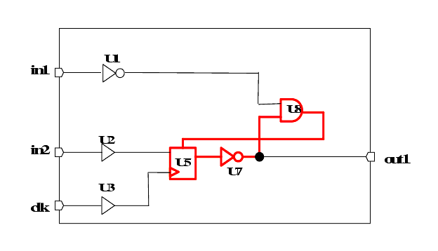

| Description | The rule detects the condition where there is a loop from the output of FF to its own asynchronous reset or asynchronous set or clock pin. |
| Policy | DESIGN |
| Ruleset | CLOCKS |
| Language | VHDL/Verilog |
| Type | Hardware |
| Severity | Error |
module top (in1, in2, clk, out1);
input in1, in2, clk;
output out1;
GTECH_NOT U1 (.A(in1), .Z(in1_i) );
GTECH_BUF U2 (.A(in2), .Z(in2_i) );
GTECH_BUF U3 (.A(clk), .Z(clk_i) );
GTECH_FD2 U5 (.D(in2_i), .CP(clk_i), .CD(rst_i), .Q(out1_i));
GTECH_NOT U7 (.A(out1_i), .Z(out1) );
GTECH_NAND2 U8 (.A(in1_i), .B(out1), .Z(rst_i));
endmodule
